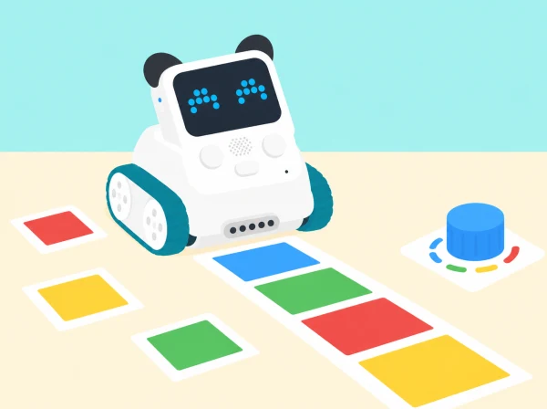
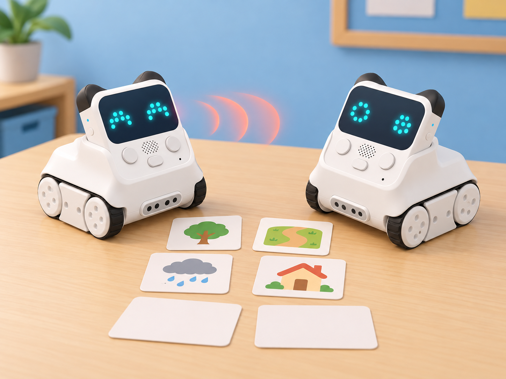
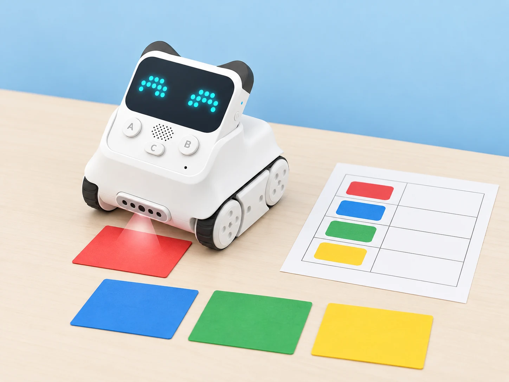

El laboratori de sensors de Codey Rocky
🏷️ Sensors i interacció
🌱 Situació, repte i intenció
🎯 Aprenentatges i vocabulari
- Identificar les entrades disponibles de Codey Rocky i relacionar-les amb una resposta del programa.
- Construir una prova repetible que compare la predicció amb la lectura observada.
- Interpretar dades de botons, infraroig, color, llum o giroscopi sense atribuir-los capacitats que no tenen.
- Documentar errors, límits del sensor i una decisió de disseny basada en evidències.
🧰 Materials i preparació
Cal Codey Rocky, mBlock en una versió compatible, paper, targetes de color, quadrícula i material tou per a la maqueta. Les sessions 5 i 6 necessiten dos dispositius amb transmissió/recepció IR compatibles per a completar la comunicació física; sense el segon dispositiu es conserva el disseny de protocol i s'identifica l'assaig com a no executat. El resultat de cada sensor s'ha de verificar al model i al programari disponibles.
El catàleg oficial associa també altres lliçons a interruptors tàctils externs, sensor d'ultrasons i tira LED Neuron. Aquests components no es consideren part del Codey Rocky bàsic d'aquesta proposta. No substituïm eixos reptes per una activitat que fingisca tindre els mòduls: queden marcats per a adaptar-los quan es confirme l'accessori corresponent.
📅 Seqüència didàctica
Find the Blue Dot
Fase 1 · Activem i prediem
Prepareu una quadrícula de paper amb files i columnes. Predigueu com es podria indicar una cel·la sense escriure’n el nom: un punt, una fletxa o una coordenada per torn.
Fase 2 · Explorem i construïm
Programeu el botó de Codey perquè inicie el repte i la matriu LED perquè mostre un punt o una fletxa. Associeu cada símbol amb una cel·la del tauler.
Fase 3 · Expliquem i registrem
Anoteu la cel·la indicada i l’entrada que ha activat el programa. Distingiu el moment de llegir el botó del moment d’actualitzar la pantalla.
Fase 4 · Apliquem i millorem
Proveu una pulsació curta, una de llarga i cap entrada. Si dues pulsacions generen respostes difícils de distingir, ajusteu la regla o el símbol LED.
Fase 5 · Comprovem i reflexionem
Lucky Wheel
Fase 1 · Activem i prediem
Trieu opcions neutres, com ara quin repte cooperatiu provar, i representeu-les en una roda de paper. Predigueu si cada opció eixirà amb la mateixa freqüència.
Fase 2 · Explorem i construïm
Useu el botó per iniciar i aturar una seqüència de selecció en la matriu LED. Diferencieu una animació que només sembla una roda d’una selecció que depén d’un valor variable.
Fase 3 · Expliquem i registrem
Feu una sèrie de rondes i anoteu cada resultat amb marques de recompte. Manteniu el mateix nombre d’opcions i el mateix nombre d’intents per tanda.
Fase 4 · Apliquem i millorem
Compareu dues tandes i reviseu que el programa no afavorisca una posició per l’ordre de la seqüència o pel temps de pulsació. Si no hi ha un bloc aleatori, descriviu el resultat com una animació cíclica, no com una tria aleatòria.
Fase 5 · Comprovem i reflexionem
Codey Rocky Can Do Addition
Fase 1 · Activem i prediem
Repartiu objectes de prova en dues categories i feu un recompte manual inicial. Predigueu com canviarà la suma quan s’afiga una detecció a cada categoria.
Fase 2 · Explorem i construïm
Comproveu quin esdeveniment infraroig pot generar realment el model i l’equipament disponible. Programeu dos comptadors: cada detecció vàlida dins de la finestra acordada aporta una unitat al registre corresponent.
Fase 3 · Expliquem i registrem
Mostreu els dos recomptes i la suma. Registreu els valors abans i després de cada entrada per poder reconstruir el càlcul.
Fase 4 · Apliquem i millorem
Compareu el resultat programat amb el recompte manual en una tanda nova. Reviseu dobles deteccions o senyals que no s’hagen comptat i ajusteu la finestra de prova.
Fase 5 · Comprovem i reflexionem
Jump! Codey
Fase 1 · Activem i prediem
Dibuixeu una pista curta de paper i trieu una icona per a representar l’activació. Predigueu què ha de passar quan arriba l’entrada IR i què ha de passar quan no arriba.
Fase 2 · Explorem i construïm
Programeu l’entrada IR acordada perquè Codey canvie la icona de la pantalla i Rocky faça un moviment breu. Manteniu la pista lliure d’obstacles rígids i el robot sobre una superfície estable.
Fase 3 · Expliquem i registrem
Registreu les entrades detectades, la icona mostrada i si el moviment s’ha produït. Separeu la lectura real del sensor de la regla de joc que heu triat.
Fase 4 · Apliquem i millorem
Compareu una versió amb pausa i una sense. Reviseu si els senyals consecutius es distingeixen i si el moviment es manté dins de la pista.
Fase 5 · Comprovem i reflexionem
RC Car
Fase 1 · Activem i prediem
Dibuixeu una ruta de repartiment en una quadrícula i acordeu un vocabulari curt d’ordres. Predigueu quines instruccions podrien perdre’s o repetir-se durant una transmissió.
Fase 2 · Explorem i construïm
Amb dos Codey Rocky i dos dispositius IR compatibles, configureu un emissor i un receptor. L’emissor envia ordres de ruta i el receptor les converteix en moviments o indicacions del model.
Fase 3 · Expliquem i registrem
Registreu l’ordre enviada, la rebuda i la resposta. Intercanvieu els rols perquè cada equip prove tant la transmissió com la recepció.
Fase 4 · Apliquem i millorem
Repetiu una ruta i marqueu ordres perdudes o repetides. Si només hi ha un robot, alterneu el control amb un comandament IR compatible disponible; si no n’hi ha, assageu el protocol en targetes i indiqueu que la transmissió física no s’ha provat.
Fase 5 · Comprovem i reflexionem
Un missatge entre dos Codey
Fase 1 · Activem i prediem
Recordeu la sessió anterior: localitzeu en cada Codey Rocky l’emissor i el receptor IR segons el manual del model, i expliqueu quin paper fa cadascun. En parelles, inventeu una història breu situada en un espai pròxim —per exemple, dos missatges per orientar una visita a l’hort escolar— i definiu tres codis numèrics amb significat acordat. Predigueu què hauria de mostrar el receptor si rep un codi vàlid, un de desconegut o cap missatge. No empreu noms, ubicacions particulars ni missatges personals.
Fase 2 · Explorem i construïm
Prepareu dos Codey Rocky i dos ordinadors amb mBlock compatible; si cal, connecteu-los per USB o amb els dispositius Bluetooth disponibles. Un equip programa l’emissor amb els blocs IR i l’altre configura el receptor perquè llija el valor rebut, el guarde en una variable i trie una resposta visual. Abans de provar, feu que una altra parella puga llegir la taula de codis.
Si la dotació només té un robot o no es pot verificar l’enllaç IR, completeu el disseny amb targetes i marqueu la prova física com a pendent.
Fase 3 · Expliquem i registrem
Escriviu un guió de tres moments —inici, missatge i resposta— i executeu-lo amb els dos robots. Registreu per a cada prova el codi enviat, el valor rebut, la variable i la resposta LED; compareu el relat previst amb el que realment s’ha mostrat. La història i els símbols són creació de l’equip, no contingut incorporat al robot.

Fase 4 · Apliquem i millorem
Afegiu una resposta segura per a un valor no reconegut, com ara una icona neutral i cap moviment. Proveu almenys cinc casos: cada codi vàlid; un valor que no figure en la taula; cap emissió; i una repetició del missatge. Alterneu emissor i receptor i compareu si la història s’entén quan canvia qui inicia l’intercanvi. No atribuïu al robot confirmació d’entrega, abast garantit ni comunicació a través d’obstacles: anoteu només el resultat observat en les condicions de l’aula.
Fase 5 · Comprovem i reflexionem
Volume Control
Fase 1 · Activem i prediem
Observeu el potenciòmetre i indiqueu quina resposta espereu en els extrems i al punt intermedi. Acordeu una escala de tres nivells per comparar-la.
Fase 2 · Explorem i construïm
Llegiu el potenciòmetre integrat i useu la posició per regular el volum d’un senyal breu. Si el model o la configuració no permet so, feu servir la freqüència d’una animació LED com a alternativa identificada.
Fase 3 · Expliquem i registrem
Anoteu valors mínim, intermedi i màxim al costat de la resposta observada. Descriviu com heu convertit la lectura en tres nivells comprensibles.
Fase 4 · Apliquem i millorem
Proveu posicions intermèdies i ajuste els límits si dos nivells produeixen respostes massa semblants. Repetiu les lectures sense moure el robot ni canviar de programa.
Fase 5 · Comprovem i reflexionem
Number Guessing
Fase 1 · Activem i prediem
Trieu un rang menut i penseu com convertir el gir del potenciòmetre en una conjectura. Predigueu què mostrarà el programa si la conjectura és inferior, superior o igual al valor secret.
Fase 2 · Explorem i construïm
Programeu el potenciòmetre per seleccionar la conjectura, el botó per confirmar-la i la matriu per mostrar «més», «menys» o «encert».
Fase 3 · Expliquem i registrem
Anoteu la lectura analògica, l’enter que li correspon, el valor secret i la pista mostrada en cada intent. Feu visible com es calcula la conversió.
Fase 4 · Apliquem i millorem
Proveu els valors dels extrems, repeticions i un rang diferent. Reviseu què passa quan dues lectures pròximes es converteixen en el mateix enter.
Fase 5 · Comprovem i reflexionem
I'm a Good Guesser
Fase 1 · Activem i prediem
Prepareu targetes de colors per a una galeria del pati i predigueu quines podrà distingir el sensor. Acordeu com presentareu cada targeta.
Fase 2 · Explorem i construïm
Feu lectures de diverses targetes, manteniu la distància, l’orientació i la llum tan constants com siga possible i creeu una regla inicial de classificació.

Fase 3 · Expliquem i registrem
Anoteu les lectures repetides per targeta, la classificació prevista i el resultat. Separeu les targetes utilitzades per ajustar la regla de les que reservareu per a comprovar-la.
Fase 4 · Apliquem i millorem
Proveu la regla amb targetes que no s’han emprat per ajustar-la. Si falla, canvieu una condició alhora i repetiu tant la mostra inicial com les targetes de comprovació.
Fase 5 · Comprovem i reflexionem
Stoplight
Fase 1 · Activem i prediem
Dissenyeu una maqueta de pas escolar amb targetes de color i predigueu quina resposta ha de correspondre a cada senyal. Afegiu una targeta desconeguda com a cas de prova.
Fase 2 · Explorem i construïm
Programeu Rocky perquè, en detectar la targeta acordada, canvie l’estat LED i mostre també una forma o patró diferenciat. Manteniu text o símbols equivalents al color.
Fase 3 · Expliquem i registrem
Completeu una taula amb senyal present, lectura del sensor i resposta mostrada. Registreu els casos de color reconegut, absent i no previst.
Fase 4 · Apliquem i millorem
Reviseu els casos límit i feu que les respostes siguen distingibles també sense dependre només del color. Proveu de nou amb targetes en una condició de llum diferent.
Fase 5 · Comprovem i reflexionem
Sensing Motions
Fase 1 · Activem i prediem
Amb Codey sobre una superfície estable, predigueu quin eix canviarà en una inclinació suau cap endavant, enrere o cap a un costat. No feu girar ni deixeu caure el robot.
Fase 2 · Explorem i construïm
Registreu una posició inicial de referència i inclineu Codey suaument en cada direcció. Llegiu els eixos i construïu una visualització senzilla per a una maqueta d’edifici accessible.
Fase 3 · Expliquem i registrem
Anoteu posició inicial, eix observat, sentit del canvi i resposta representada. Repetiu cada inclinació i manteniu la mateixa posició de partida.
Fase 4 · Apliquem i millorem
Compareu les repeticions i ajuste la visualització perquè diferencie els canvis observats. Si la lectura deriva o varia, registreu-ho en lloc d’amagar-ho.
Fase 5 · Comprovem i reflexionem
Jumping Game 2.0
Fase 1 · Activem i prediem
Dissenyeu un joc curt en què un personatge LED evita obstacles i guanya punts. Predigueu com una inclinació suau pot controlar el personatge i quines alternatives d’entrada podrien funcionar.
Fase 2 · Explorem i construïm
Programeu el giroscopi perquè detecte una inclinació i moga el personatge. Manteniu clara la regla de puntuació i oferiu una alternativa amb botons des del primer prototip.
Fase 3 · Expliquem i registrem
Anoteu inclinació detectada, resposta del personatge i resultat de cada partida. Compareu el senyal llegit amb l’acció programada.
Fase 4 · Apliquem i millorem
Proveu el llindar amb gestos còmodes i ajuste’l perquè el repte no exigisca moviments bruscos. Feu una prova d’usabilitat amb l’entrada alternativa i registreu si permet completar les mateixes accions.
Fase 5 · Comprovem i reflexionem
🧪 Evidències i avaluació
Cada equip lliura sis registres d'entrada i resposta, diagrames o fragments de codi, taules de proves amb casos límit i una explicació d'una limitació del sensor. La mostra final pot ser una demostració presencial, un pòster o una descripció accessible del prototip. Valorem la predicció, la prova repetible, la depuració i la justificació de decisions, no la velocitat ni la competició entre equips.
♿ Participació, accessibilitat i seguretat
Oferim instruccions orals i visuals, torns de control, opcions amb botons i rols de programació, observació i registre. Evitem gestos bruscos i mantenim el robot sobre una superfície estable; les lectures es comproven al model i al programari disponibles.
🔗 Referents i adaptació
La traçabilitat parteix de les lliçons 17, 18 i 21–30 de Codey Rocky & Neuron Discovery, segons els títols i objectius publicats per Makeblock. Per a la sessió 6, la guia docent oficial, lliçó 24 “When Codey Meets Codey”, concreta l’ús dels emissors/receptors IR, els blocs infrarojos, les variables i una tasca d’escriptura d’història; la proposta en conserva aquests objectius amb una narració pròpia i casos de prova.
La guia oficial About Codey Rocky identifica el mòdul IR del xassís Rocky com a sensor de color/proximitat; les sessions el mostren llegint targetes, sense atribuir-li reconeixement d’objectes. Les lliçons 19–20 (interruptors tàctils), 31–32 (ultrasons) i 33–34 (tira LED) depenen dels mòduls Neuron i queden fora mentre no es confirme que són a la dotació. La resta de materials docents del curs pot requerir accés de compte;
aquesta adaptació crea reptes, seqüència i visuals propis a partir de la informació consultable i no afirma reproduir instruccions privades. La llista general de les 24 lliçons CSTA de Codey Rocky es troba en la pàgina de Codey Rocky de Makeblock.